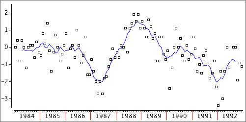
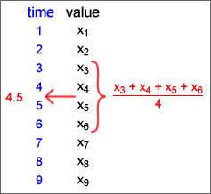
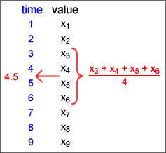
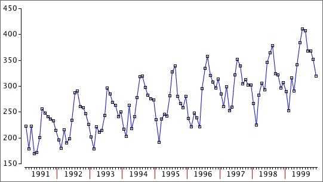
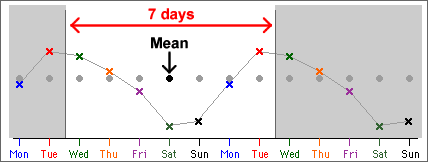
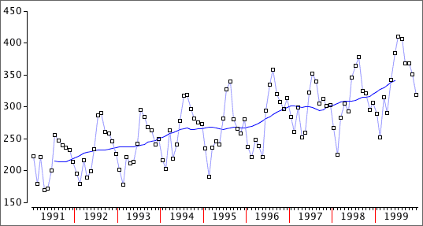

If you don't want to print now,
Smoothing
Random fluctuations in a time series are usually noise that can obscure trend and other signal in the series. The values can be smoothed to reduce these random fluctuations and show the systematic movement in the series more clearly.
smoothed value = centre ( original value and adjacent values )
Moving averages
A 3-point moving average replaces the value at time i by

Moving averages are also called running means. In the example below, a 7-point moving average replaces each value with the mean of it and the 3 adjacent values on each side.

The more adjacent values used, the greater the smoothing.
Ends of the series
Note that moving averages cannot be used to smooth the values at the two ends of the time series.
Moving average with odd and even run lengths
A moving average provides a smoothed value at the middle of the times of the values being averaged.
 

If averaging over an even number of values, the smoothed value is for a time between those of the data values, such as "year 2005.5".
A second stage of averaging for even run lengths
To provide smoothed values at the same times as the raw data, we often take a further 2-point moving average.

This is equivalent to giving half weight to the two outermost values. If based on moving averages of 4, this is called a 4-point centred moving average.
These centred averages are particularly useful when analysing seasonal data. For example, 12-point centred moving averages are often used for monthly data.
Least squares
Moving averages provide a good description of the trend in a time series but are less useful for forecasting future values. For forecasting, it is better to describe trend with a mathematical equation,
trend = function ( time )
The simplest such model is a linear model,
trend = b0 + b1 time
b0 and b1 can be estimated by least squares to minimise


Recoding the years
The large intercept in the example above is avoided if the years are recoded so that some year within the range of the data becomes "year 0".
trend = b0 + b1 (time − 1960)
This model is equivalent and gives the same fitted values and forecasts.

Quadratic models
If the trend in a time series is nonlinear, a linear model should not be used. A simple model that can explain some simple types of curvature is a quadratic model:
trend = b0 + b1 time + b2 time2
This has three parameters that can be adjusted to improve the fit of the model. Residuals are again defined as
ei = yi − trendi
and the least squares estimates of b0, b1 and b2 are the values that minimise the residual sum of squares,
Σ ei2

Using linear and quadratic models for forecasting
After fitting a linear or quadratic model by least squares, forecasting is simply a matter of inserting future time values into its equation.
Dangers in forecasting
It is important to realise that the forecasts from linear or quadratic models are highly dependent on the type of line or curve that is chosen for modelling. The dangers are the same as those for extrapolation in bivariate relationships.
Beware forecasting many time periods into the future — the shape of the actual trend line might be different from your model.
Seasonal data
In monthly or quarterly data, there is often a pattern of peaks and troughs that repeats in a similar way each year. Daily data often show a pattern that repeats each week, and hourly data often have a daily pattern. These are all called seasonal patterns.

Seasonal patterns make it difficult to assess whether a particular month's value is unusually high or low.
Regular seasonal patterns can be projected into the future and are important in forecasting.
Moving averages
Daily data have a cycle length of 7 days, so each 7-point running mean averages exactly one value from each day of the week. If the seasonal pattern was to repeat exactly every week, 7-point moving averages will be the same every day, as illustrated below.

A 7-point moving average therefore removes a weekly seasonal pattern from daily data. In general,
For seasonal data with cycle length n, an n-point moving average removes the seasonal effect.
Even cycle lengths
Most seasonal data have an even cycle length, so centred moving averages must be used. For example, with quarterly data we should use a 4-point moving average:

The diagram below removes a monthly seasonal effect with 12-point moving averages.

Limitations of moving averages for removing seasonal variation
Estimating a common seasonal effect
If the underlying seasonal pattern in monthly data repeats in the same form each year, the residuals from 12-point moving averages can be used to estimate the seasonal pattern. The seasonal effect for any month is estimated as the average of the residuals for that month.

Removing the seasonal effect
Having estimated a common seasonal effect that describes how far each month's value is (on average) from the overall trend, we can subtract this seasonal effect to obtain deseasonalised data. This is often called seasonally adjusting the data.

The time series can be deseasonalised in this way for all years (including the most recent data).
The deseasonalised data not only shows the trend in the series more clearly, but also shows individual months that are substantially different from the usual seasonal pattern.
Four components of a time series
The variation in a time series can be split into four separate components:
Deseasonalised = Trend + Cyclical + Residual
(Of course, the seasonal effect is only present for seasonal data.)


Forecasting the individual components
The seasonal, trend and cyclical components can be separately forecast into the future. Putting them together provides a forecast for the time series values,
Forecast = Seasonal effect + Trend forecast